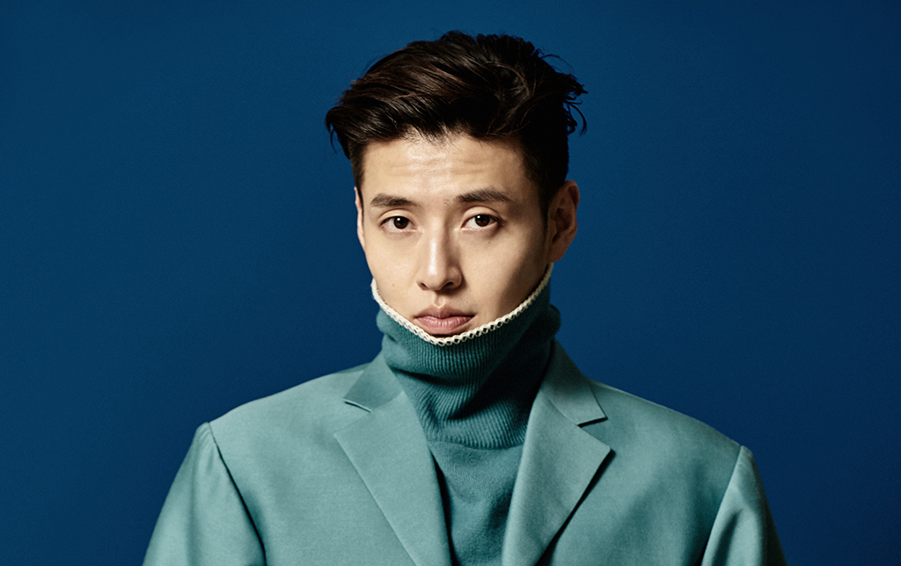

강하늘은 2007년 KBS 2TV 드라마 최강 울엄마에서 "최훈" 역할을 맡아 데뷔했다.
호감형의 외모와 준수한 실력으로 뮤지컬계에서 인지도가 높은 편이었으며, 몇몇 대형기획사에서 영입 제안을 했지만 '무대 공연은 포기할 것'이라는 조건 때문에 거절했을 정도로 무대 공연에 대한 애착이 강하다.
텔레비전이나 영화 등에서는 주로 비중이 적은 조연이었으나, 이후 연기력을 인정받으며 본격적으로 활동 영역을 넓히는 중이다. 2014년 TV 드라마 《상속자들》과 《미생》 등에 출연한 것을 계기로 주조연급 배우로 성장했다.2019년 KBS2 수목드라마 동백꽃 필 무렵에서 데뷔 후 처음으로 드라마에서 주연을 맡았고, 큰 흥행을 거뒀다.

드라마에서는 엘리트 고등학생, 재벌가 자제, 대기업 회사원 등과 같이 차갑고 딱딱한 차도남 역을 자주 맡지만, 실제로는 오히려 동료들에게 애교가 많고 헐랭한 편이라 갭 모에를 느낄 수 있다. 관객들에게도 귀여운 팬서비스를 자주 하는 편이라 열혈 팬들이 많다. 최종 꿈은 "배우 강하늘이 되는 것". 본인은 아직 연기를 배우는 학생에 불과하며, 스스로 "배우 강하늘"이라고 당당하게 소개하는 것이 꿈이라고 한다. 실제로 미니홈피에 업로드한 뮤지컬/연극 홍보 포스터 사진을 보면, "배우 강하늘"이라고 적힌 부분에서 "배우" 부분을 본인이 직접 지워놨다